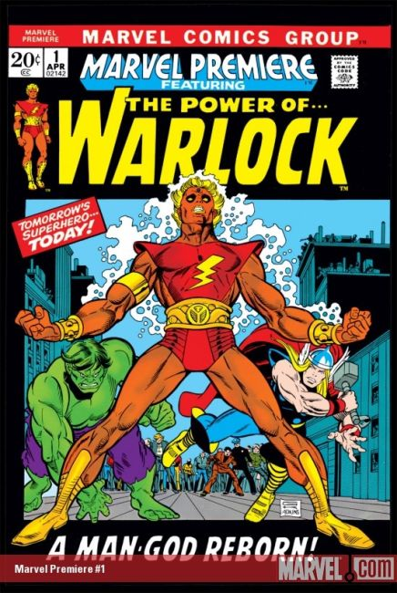

Marvel Premiere #1

Series: Marvel Premiere
Characters: HIM becomes Adam Warlock, Thor, Hulk, High Evolutionary, David Carter, Ellie Roberts, Jason Grey, Counter-Earth, the Soul Gem.
Released: May 1972
Publisher: Marvel Comics
Illustrator: Gil Kane
Writer: Roy Thomas
Story: And Men Shall Call Him... Warlock (Cover: A Man-God Reborn!)
High Evolutionary gives the Soul Gem to Warlock before sending him to Counter-Earth.